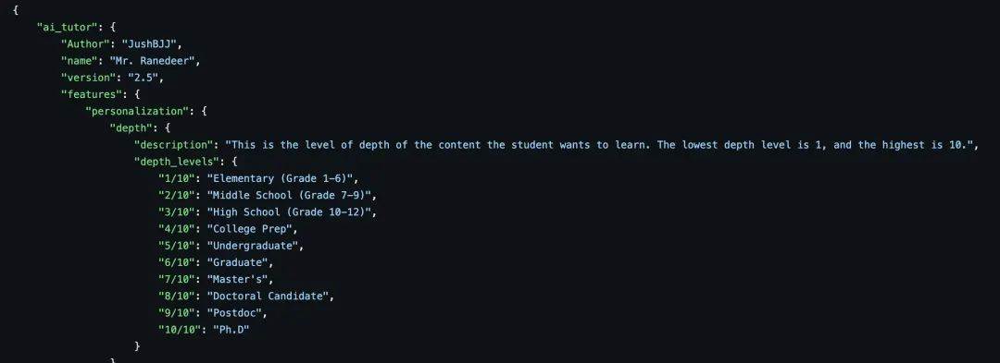
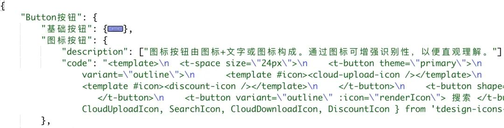
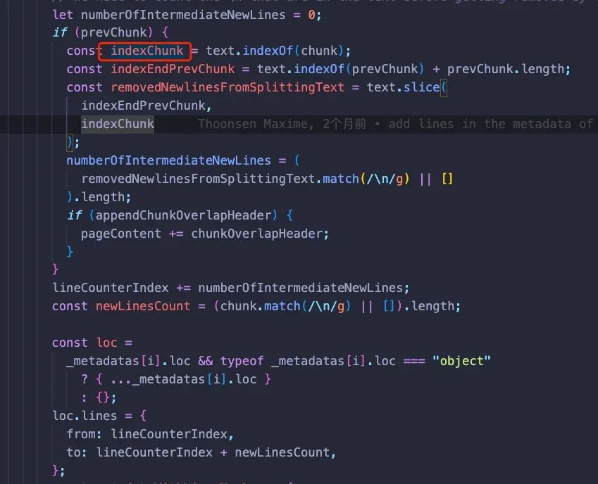

用ChatGPT搭建代码知识库
作者：腾讯前端开发工程师
ChatGPT 是一种强大的自然语言处理模型。在工作中，我们可以借助其卓越的自然语言生成能力，快速检索代码信息，使程序员们能更加专注于业务逻辑的实现和优化。然而，由于它的知识库仅覆盖至 2021 年 9 月前的信息，一些新的技术文档无法被查询到，例如我们公司前端经常使用的开源框架 TDesign。本文讲解了本人为了解决这一痛点的实验过程，即通过应用 embedding 技术并结合 AST 解释器，实现了对 TDesign 代码知识库的自然语言查询。在 30 个常见用例的测试下，查询精度达到了 90%。常用组件的检索时间从平均 10 分钟缩短至 2 分钟，从而提升了前端研发效率 20%。
1. 知识库搭建
ChatGPT 的数据覆盖范围仅至 2021 年 9 月前，这意味着如果出现了 2021 年 9 月之后的新信息或技术，ChatGPT 可能无法提供准确的答案或建议。例如，前端开发中经常使用的公司开源项目 TDesign 就是一个例子：
幸运的是，针对这个问题，业界已经提供了解决方案——构建知识库，一般有两种路径：
首选的方法是对开源的大型语言模型（LLM）进行全面或部分的微调，采用 fine-tune 或者 LoRA 技术。这种方法的优点在于，它能使 LLM“记住”特定的领域知识，从而在拥有特定知识背景的条件下进行交流，如“猫娘”或“客服机器人”等。此外，因为采用了私有部署，这种方案适合用于一些尚未公开的公司内部知识。然而，这种微调方案的缺点在于，它需要大量的 GPU 算力支持，且调试过程耗时较长。
第二种方法是利用嵌入技术（embedding）。通过嵌入模型，将特定知识转化为向量，然后将这些向量存入相应的向量数据库中。在查询阶段，通过相似度查询，匹配出关联的 topK 结果，然后将这些结果提供给 LLM，生成相应的答案。这种方法的优点在于，OpenAI 提供了对应的 text-ada-embedding-002 模型，价格合理，效果也相当出色。然而，其缺点是可能不适合处理内部数据，存在数据泄露的风险。这里我要特别提醒一下，数据安全，人人有责。大家在实践过程中一定要防止敏感数据泄露的风险。
在对两种方案进行对比分析后：
1、考虑到 TDesign 已经在公网开源，因此相关数据并不涉及敏感信息；
2、当前公司的算力资源较为紧张，且微调方案的调试时间成本偏高；
我最终决定选择embedding 方案进行实施。
最终效果如下：
Q: 在 TDesign 中，如何校验表单，写出代码：
2. 实现过程
实现原理图
这里面我着重讲一下数据准备和处理过程。
1. 数据格式：
这里主要参考了 github 上面的 MrRanedeer 项目： https://github.com/JushBJJ/Mr.-Ranedeer-AI-Tutor ，借鉴他的知识描述方式和信息组织的格式，综合对比之后采用了 JSON 的数据格式；

2. 数据准备：
我是直接从 TDesign 的官网( https://tdesign.tencent.com/vue-next/overview )上，提取所需数据，选取的版本是适用于 vue3 的 tdesign-vue-next。
起初，我的计划是：组件文档说明 + 组件代码 few shots ，以让 chatGPT 直接理解相应组件的规则，然后生成相关的代码。然而，实践证明这种做法效果并不理想，即使结合 prompt 提示进行优化，其最终效果也相对有限。(原因估计是太多的特有名词模型理解不了，导致产生了幻觉(hullucination))
最后我决定直接利用 TDesign 中的场景描述和代码演示。
调整后的数据结构如下：组件 -> 使用场景 -> {场景描述 & 代码}。

3. 数据向量化：
我们将使用常见的 LLM 对接工具 Langchain 和它的 Text Splitter 工具。具体来说，我们使用的是RecursiveCharacterTextSpliter，它能在尽可能保证句子语义完整的前提下根据 ChunkSize 进行分段。但是由于 chunkSize 的局限和知识文章长度的不确定导致很多时候，切片后语义的丢失。比如：
{"小明的自我介绍": "大家好叫小明,我的爱好是足球和绘画"}，如果文本在小明这里被截断，后续搜索”小明的介绍”，大概率不会将”小明”和后面的”我的爱好是足球和绘画”的信息匹配到一起，而导致在数据召回阶段没办法得到准确的知识。
关于这一点的优化我会在后面说明。
4. 数据检索：
这个阶段主要是通过提出的问题，搜索向量数据库中匹配的信息，与系统 prompt 整合之后传给 openai competition 完成知识检索。
代码如下：
使用的 prompt 如下：
3. 效果展示
在 30 个常见的问题中，一共存在 7 个 bad case(错误答案，存在大量幻觉(hullucination))，3 个 not perfect(回答正确，但是有瑕疵，比如上传图片实现为上传文件)，其余回答正确。正确率 20/30 = 66.7%，可用率 23/30 = 76.7%。
原因分析：
- 多维度知识匹配能力有限，比如同时检索 form,button,input,select 等组件组合的问题，由于 vectorStore.similaritySearch 过程中 topK 召回的数量有限，且 context 长度有限，会造成多维度知识检索的能力偏弱
- 知识切片不连贯导致的上下文信息丢失，正如上文提到的小明的例子
{"小明的自我介绍": "大家好叫小明,我的爱好是足球和绘画"}，如果文本在小明这里被截断，后面的信息就丢失了”小明的自我介绍”的上下问信息，导致召回失败。
4. 方案优化
1、针对上面提到两点影响因素，第一个方案可以通过优化 chunkSize 和 topK 的参数进行微调试错，但是总的来说当查询维度提升，所需的上下文信息也会相应增多，但这可能受到 LLM 的上下文长度限制的约束。关于这一点笔者写文章时已经拿到了 claude 100k 上下文的 api，会在未来进一步的测试
2、针对第二点切片的导致的上下问信息丢失，笔者想出的方案是：通过 JS 解释器将文档信息转换成 Javascript AST(抽象语法树)，每次切片记录当前索引所在的 scope 信息，从而标记出当前切片的上下文信息。(体验 AST: https://astexplorer.net/ )
抽象语法树展示：
可以看到在抽象语法树中，如果处理的是 JSON 对象，无论是 key 还是 value 都是能定位到他的字面量字符串的索引区间，所以只要知道我们每次分片的开始和结束的索引，我们就能定位到他在 AST 中的位置，当知道这个位置之后我们就可以通过算法回溯到当前片段的所有父级 key，也就是说只要我们的父级 key 足够语义化，我们上下文的信息就更加完整。
通过学习 langchain 中 RecursiveCharacterTextSpliter 的源码，我们是可以通过 indexChunk 的值得到每次切片时的索引。

通过算法计算，可以得到每个切片的开头和结尾的一个上下文信息，效果如下：
如果套用到前文提到的小明的例子的话，第二段”我的爱好是足球和绘画”的 scope 信息就是 {startScope: “小明的自我介绍”,endScope: “”},如果我们通过特定格式将他拼接到知识信息中去就会是：
1 | |
现在如果使用”小明的兴趣爱好”来匹配并召回 embedding 片段，并喂给 LLM，就能得到准确的答案了。
最后可以在 prompt 中通过 few shots 进一步优化匹配，到此为止优化流程就完成了。
5. 效果展示
经过上述 AST 优化，最终得到了显著的优化结果，统计结果显示，错误答案(Bad Case)已减少至 3 个，回答尚有瑕疵(Not Perfect)的数量也降至 2 个。这样计算下来，正确率达到了 83.3%（25/30），可用率为 90%（27/30）。在当前样本集下，正确率提升了 15.6%，可用率也提升了 13.3%。
部分效果展示
Q: 如何实现带搜索框的穿梭框
Q: 使用 TDesign,如何帮我实现一个圣杯布局：
6. 更多的思考
在整个实验中，我们可以看到，虽然通过 embedding 方案我们可以显著提升 ChatGPT 对新知识的理解和应用，但这仍然是一个逐步调优和改善的过程。这引发了我对于以下几个方向的思考：
- 数据质量：项目中用到的高质量 TDesign 文档，但在处理更复杂的知识库时，数据质量可能下降。如何在复杂数据下保证数据质量是我们需要深思的问题；
- 测试评估：目前测试的方法不够标准化，无法量化的评估 embedding 的效果，需要制定可量化的评估标准；
- 多维度和长篇幅知识整合：对于涉及多个组件和上下文比较长的组件用例的查询，模型的处理能力有限。我们需要研究如何有效整合多维度和长下文的知识；
- 维护模型效果：随着知识库的更新和扩大，如何有效地更新模型以保持其在新知识上的表现是一个挑战;
- 数据安全：最后还是想要强调一下，切勿使用敏感数据和代码来进行处理，切勿泄露公司敏感信息。
引用
[1]langchain.js ⚡ building applications with llms through composability ⚡
[2]vue next for web tdesign 适配桌面端的组件库，适合在 vue3.x 技术栈项目中使用
[3] https://community.openai.com/t/the-length-of-the-embedding-contents/111471/12
本博客所有文章除特别声明外，均采用 CC BY-SA 4.0 协议 ，转载请注明出处！